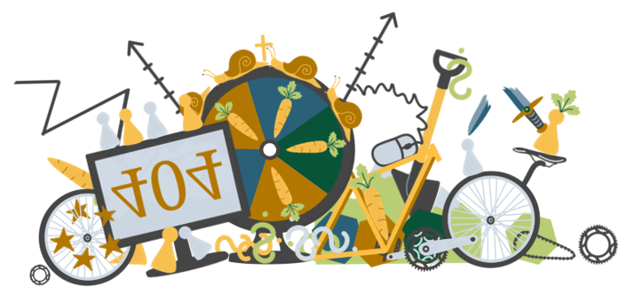
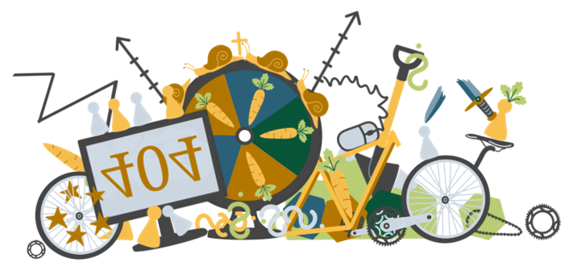

404 - System not found
Ups. Dieses System ist leider nicht auffindbar.
Entweder hat sich ein Tippfehler eingeschlichen oder diese Seite existiert (noch) nicht. Selbst die beste Struktur hilft manchmal nicht gegen Chaos.

Ups. Dieses System ist leider nicht auffindbar.
Entweder hat sich ein Tippfehler eingeschlichen oder diese Seite existiert (noch) nicht. Selbst die beste Struktur hilft manchmal nicht gegen Chaos.
